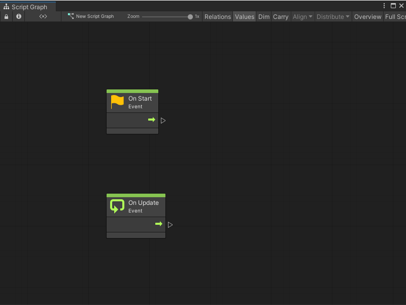
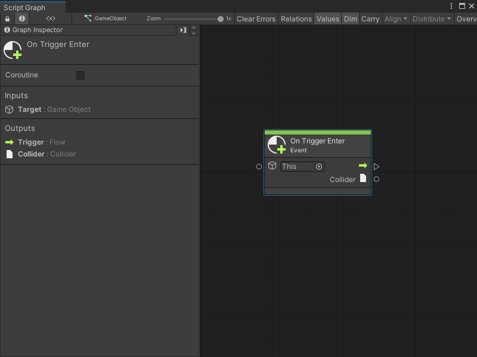
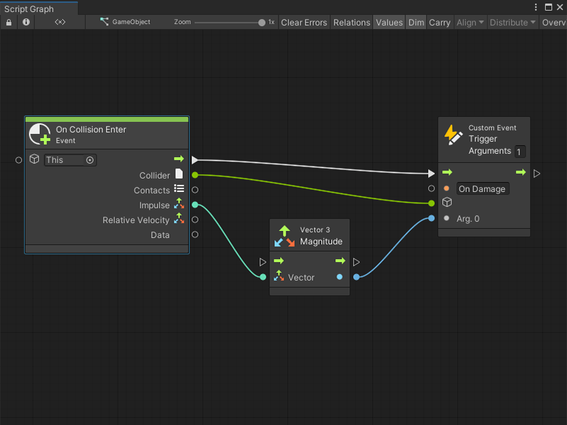
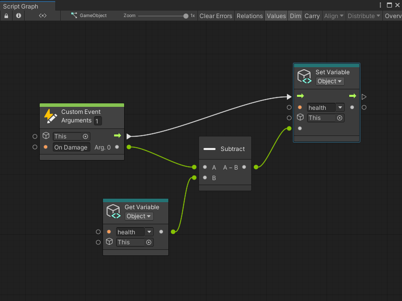
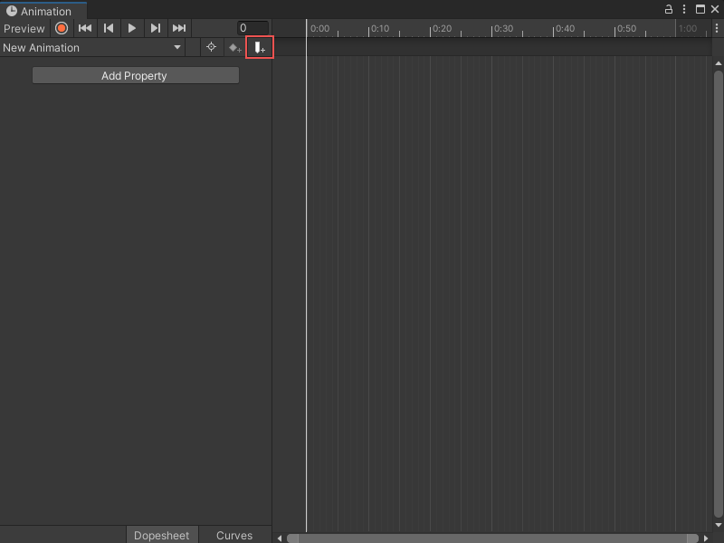
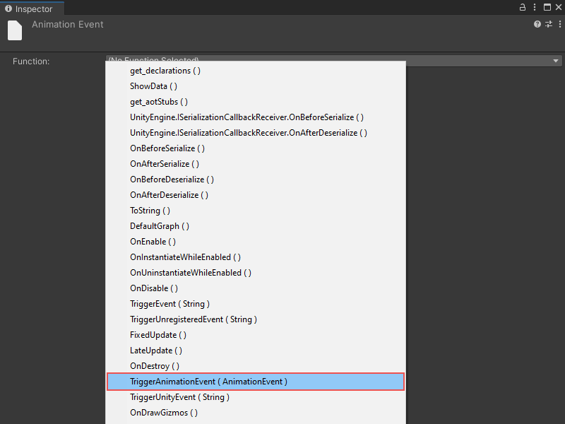
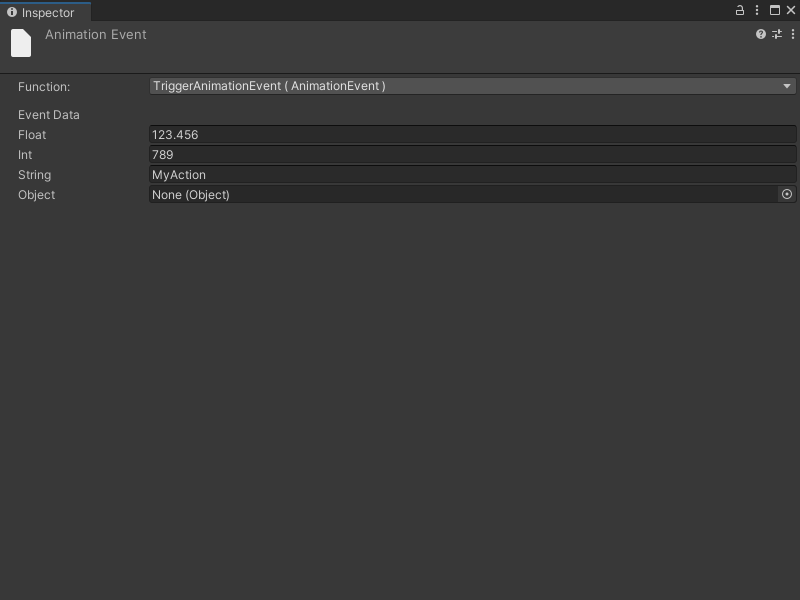
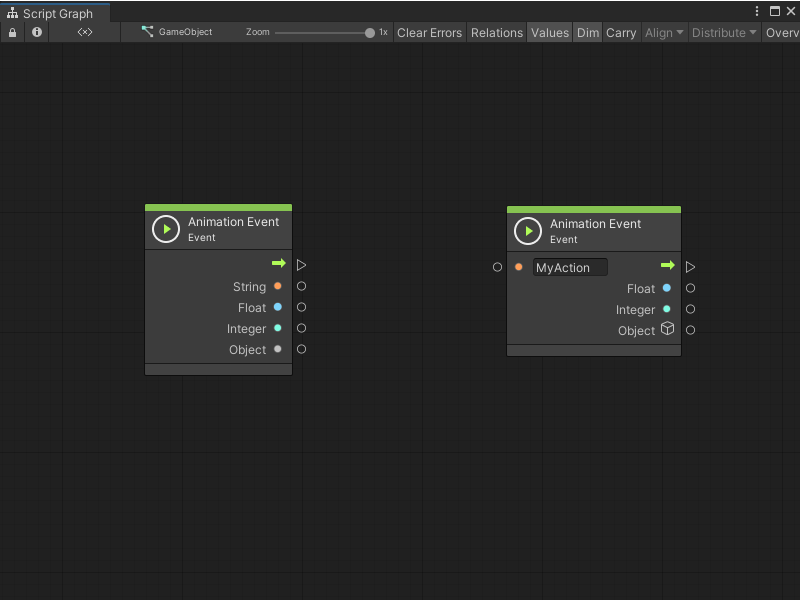
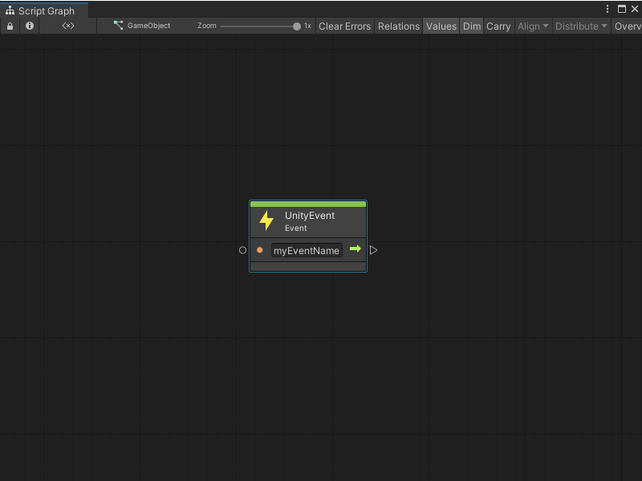
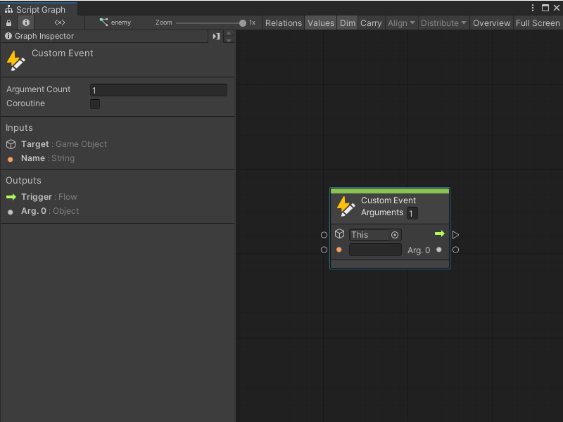

Events node¶
[!NOTE] For versions 2019/2020 LTS, download the Visual Scripting package from the Unity Asset Store.
Scripting nodes listen for events. They are the starting point for all scripts and appear as special green nodes in graphs.
There are many kinds of events, grouped in sub-categories under the root Events category (fuzzy finder > Events).
Two simple common events are Start and Update, both located under Lifecycle.
Start is called once when the graph or event handler is first created.
Update is called at every frame while the graph or event handler is active.
New script machines start with both these events by default.

Inputs & Outputs¶
All events have a single Trigger control output that starts the script when they are triggered.
Value inputs are options that influence when the event is triggered. For example, some events have a Target setting that determines which object is listening to the event. Most often, you’ll leave this setting at its default value of Self.
The value outputs on events are arguments that are passed from the event, giving you more information about what actually happened. For example, on the On Trigger Enter event, the other collider that is involved in the collision is an output.

Custom Events¶
There is a special type of event, the Custom Event that triggers custom events across graphs, along with their custom arguments.
For example, to create a custom event called On Damage that gets called so the character loses health, the event should have one integer argument that indicates the amount of damage to inflict. Listen to the event by creating a Custom Event node (under Events). Set the name to On Damage. The set the argument count, below the name, to 1.

[!NOTE] Indices are zero-based, so the first argument is labeled Arg. 0.
To trigger the event from elsewhere, use the Trigger Custom Event node, located right under the Custom Event node in the fuzzy finder. Enter the name of the event exactly as it is sensitive to case and whitespace.
For example, to create a script machine on a boulder that could hit the player, use the force of the impact as the damage.

The collider that hit with the boulder is the target of our trigger; the On Damage event is triggered on all machines attached to that collider. Use the damage value to subtract health from the receiver object.

Custom events do not require a receiver and do not cause an error if there isn’t a listener to handle them.
Animation Events¶
Use animation events to trigger Bolt graphs when you reach a certain point in your animation. Select an object with a machine and an animator. Then, from the animation window, add an animation event.

With the event selected, choose TriggerAnimationEvent as the function from the inspector.

Use any parameter from the inspector.

In your script graph, add an Animation Event node (under Events >Animation).
There are two types of events:
a global animation event, and
a named animation event.

The difference is that the first type listens to all animation events on the object and return the string parameter. The second type’s trigger is the string parameter that is equal to the specified name input.
Unity Events¶
Use Unity Events to trigger events that have been setup from the inspector. These are commonly found in GUI components like buttons, but they can also be created in your custom scripts.
Configure them by selecting an object with a machine and select the Trigger Unity Event method. In the string field, type the event name to listen to in the graph and in the graph, add a UnityEvent node with a matching name.

Additional arguments are not supported on Unity events.
Events API¶
Visual scripting provides a simple API to trigger custom events from C# script.
Add the following usings to your C# script to access the API.
using Unity.VisualScripting
Triggering API¶
A single method call is needed to trigger a custom event. Pass as many arguments as required.
CustomEvent.Trigger(targetGameObject, argument1, argument2, ...)
For example, this custom event node:

Can be triggered with this line of code.
CustomEvent.Trigger(enemy, "Damage", 30);